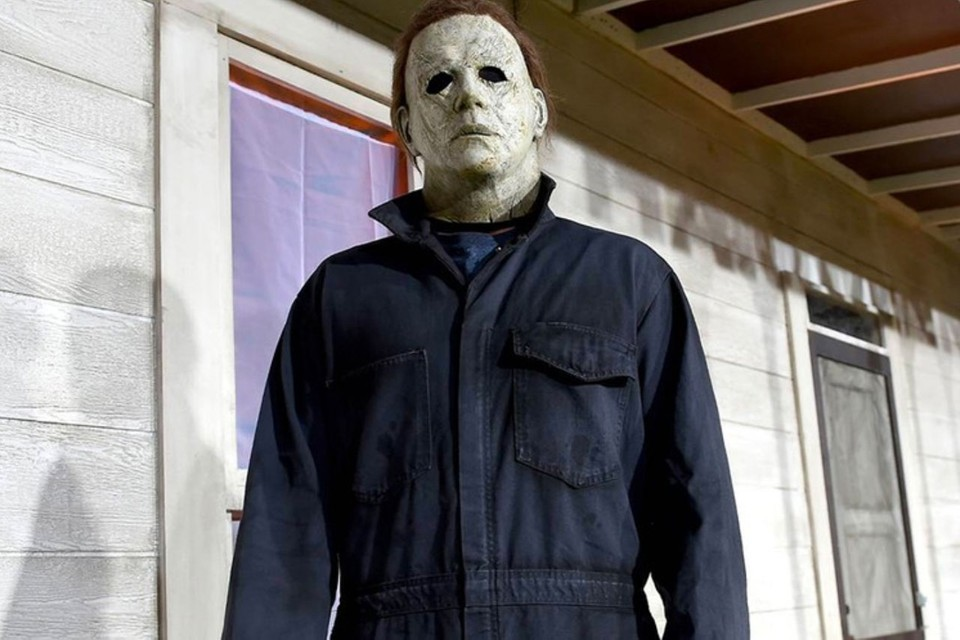
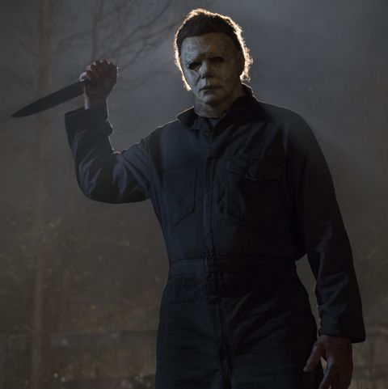

Halloween is an American slasher media franchise that consists of twelve films, as well as novels, comic books, a video game and other extravagent merchandise. The films primarily focus on Michael Myers who was committed to a sanitarium as a child for the murder of his older sister, Judith Myers. Fifteen years later, he escapes to stalk and kill the people of the fictional town of Haddonfield, Illinois.
Michael's killings occur on the holiday of Halloween, on which all of the films primarily take place. The year is 1963, the night: Halloween. Police are called to 43 Lampkin Ln. only to discover that 15 year old Judith Myers has been stabbed to death, by her 6 year-old brother, Michael. After being institutionalized for 15 years, Myers breaks out on the night before Halloween. No one knows, nor wants to find out, what will happen on October 31st 1978 besides Myers' psychiatrist, Dr. Loomis. He knows Michael is coming back to Haddonfield, but by the time the town realizes it, it'll be too late for many people.
